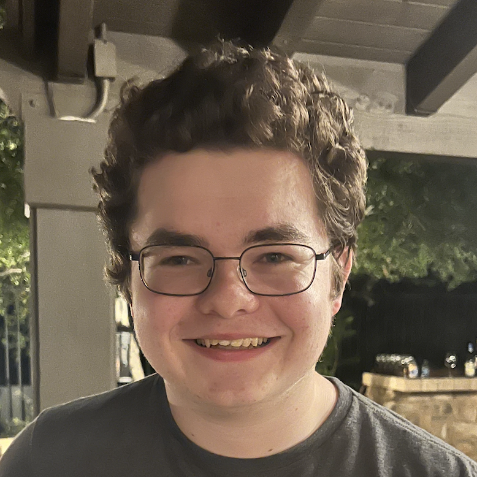

My Story:
Be it in my ancient chimeric board game creations, cobbled together Calvinball style, or in the world of digital games, the art of crafting fun experiences for others to enjoy has always been a point of aspiration for me. For the last decade, I have been making computer games for me and my friends using Unity. During High School, I created games such as Pipeline and Trajectory for my local sneakernet friends to play and enjoy. I created several core “titles” and iterated on their core concepts each year to both better the games, build upon the lessons learned from feedback, and improve as a designer. By the time I graduated, I had made 4 “Pipeline” fluid puzzle games and massively improved from the original game, both technically and artistically. I am currently pursuing a double major in Game Design and Computer Science at UCI which will allow me to continue my growth as a designer and programmer. By branching into online-multiplayer games and by working in collaborative teams of peers, I have been able to improve myself and my craft significantly. This website is a portfolio of some of my best works, with a custom-made three.js background that I made. I hope you enjoy what I have to offer, and thanks for checking out my portfolio!
Latest Projects:
Convergence - Agar.io/Osmos like game set in a massive live gravity simulation.- Pitched and led a game project with a team of 4 peers over the course of 10 weeks.
Professor Maren & The Aqueous Stones - 3D ocean defense game jam submission.
- Developed a compute shader fluid simulation for a 3D globe earth.
- Won "Best Overall Game" in the 2024 University of Delaware Climate Change Game Jam.
Chess But Better - Online multiplayer chess with randomized items.
- Designed a chess mod with a team of 5 members, including non-developers, to assist novice chess players facing skilled opponents.
- Implemented a chess system using the Photon PUN multiplayer API for online room-based multiplayer in Unity.